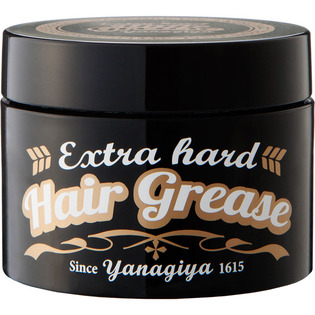

返回列表
产品名称：ＹＡＮＡＧＩＹＡ ヘアグリース ＜エクストラハード＞

柳屋本店 ＹＡＮＡＧＩＹＡ ヘアグリース ＜エクストラハード＞ ９０ｇ
メーカー 柳屋本店
JANコード 4903018117110
商品の特徴
グリース 固めずタイト
つや！
- 成分・分量
- 水、PEG-40水添ヒマシ油、エタノール、ステアレス-40、PEG-20水添ヒマシ油、グリセリン、PEG-10水添ヒマシ油、ミネラルオイル、PVP、(メタクリロイルオキシエチルカルボキシベタイン/メタクリル酸アルキル)コポリマー、ジラウロイルグルタミン酸リシンNa、BG、フェノキシエタノール、メチルパラベン、プロピルパラベン、香料
- 用法及び用量
- ○適量を指や手のひらに取って、髪になじませヘアスタイルを整えます。